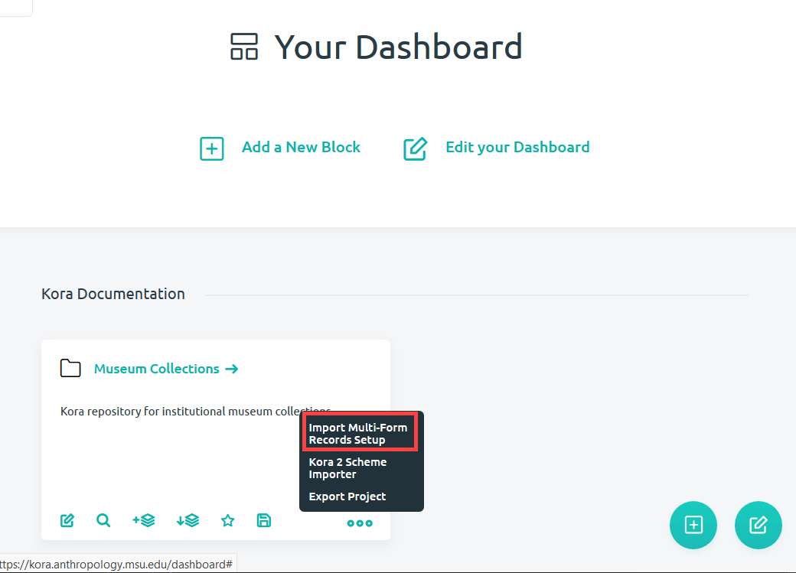
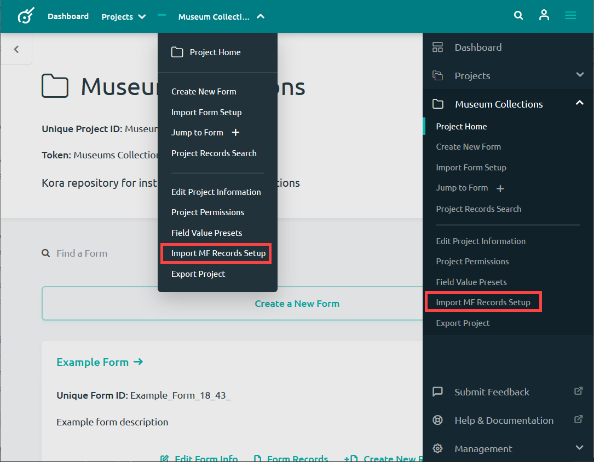
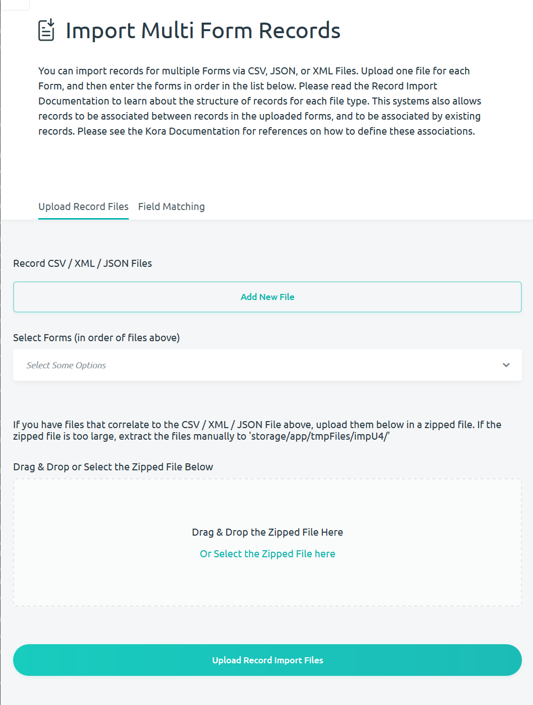
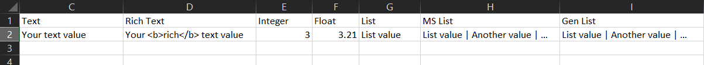
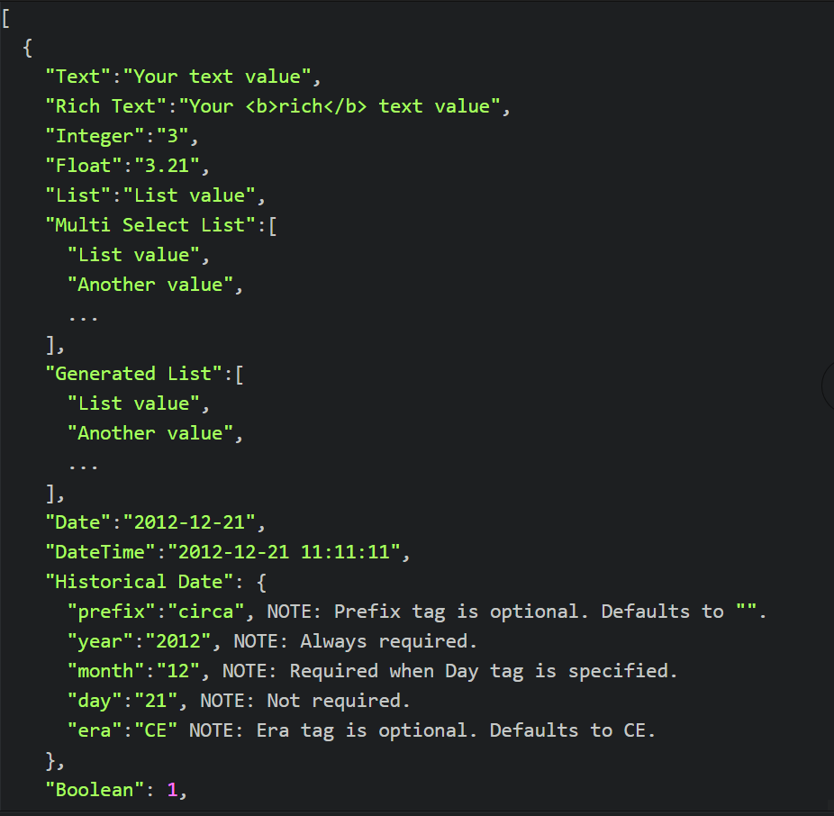
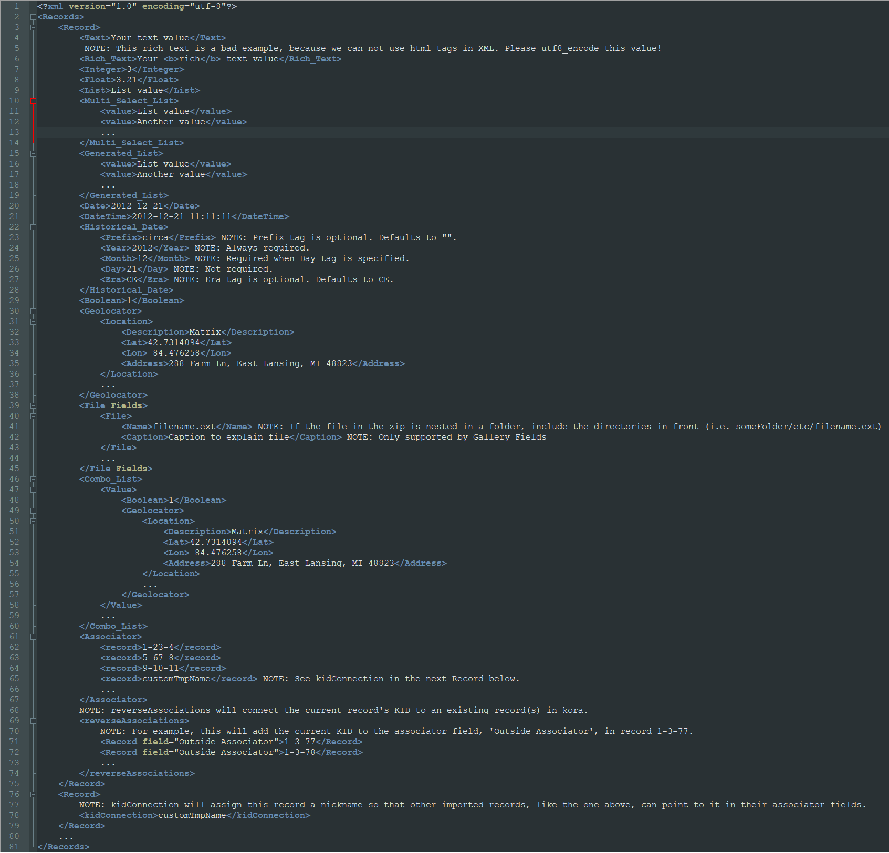
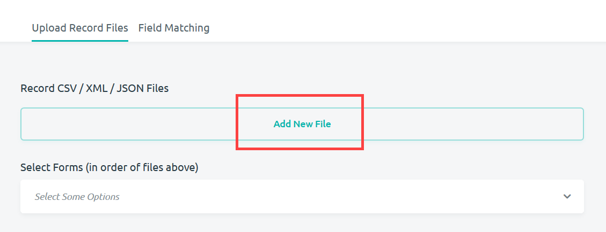
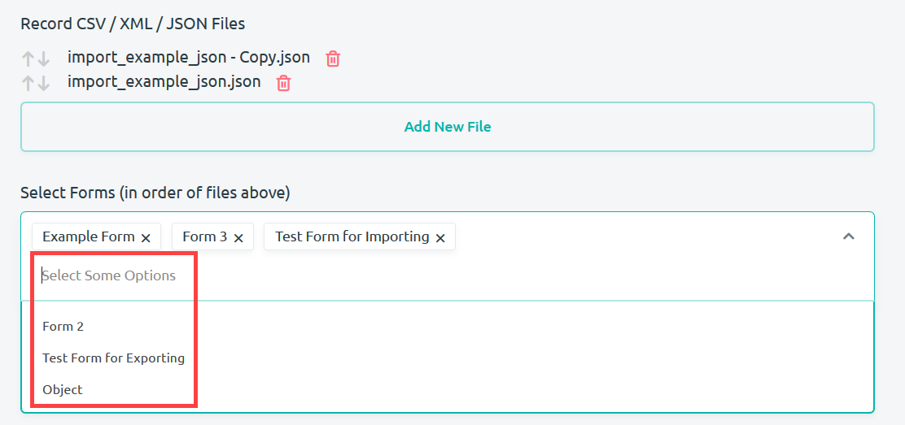
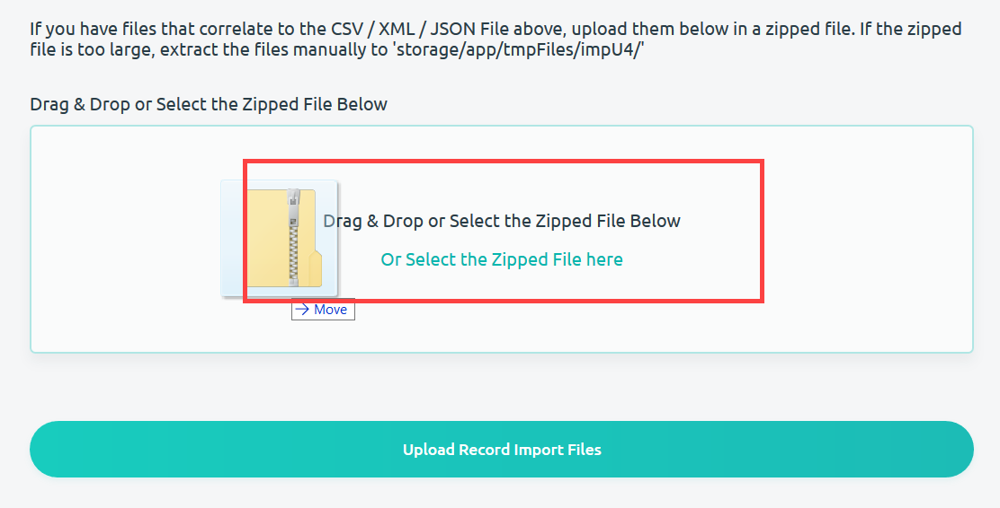
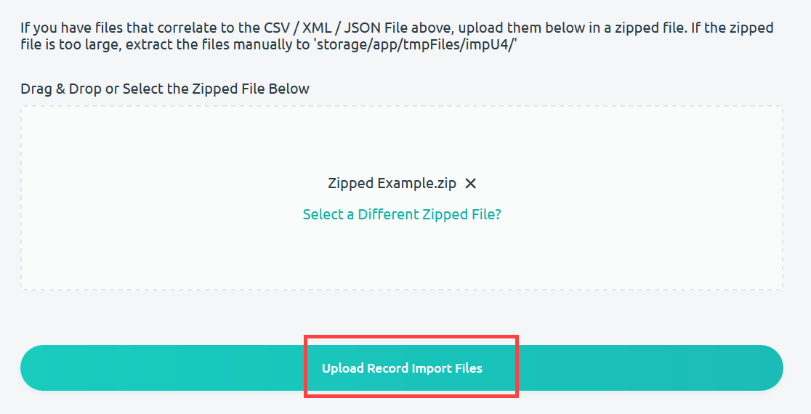

Importing Multi Form Records
If you want to import your forms into more than one form, then you will have to format your records in a particular way. This is a slightly different process than importing records into a single form. You will have to format your records correctly into a csv, json or xml file. Examples of the correct file formats are provided in the File Formatting section.
Navigating to the Import Page
Navigating to Import Multi Form Records page can take place from either the dashboard or from a project's homepage.
-
From the dashboard, you are able to navigate to the Import Multi Form Records page from a project block by clicking on the Quick Action icon.

-
Alternatively, you may select Import MF Record Setup from the project homepage using the Kora menu.

Either of these options will bring you to the Import Multi Form Records page where you can import record files to multiple forms

File Formatting
There are three formats that you are able to upload files in: .csv, .json, and .xml. If you follow the example formats given below, you will be able to import records into multiple forms. (Note to kora doc people: example files are on the Google drive. Do you think it would be better to just link to the example files that Anthony provided me?)
-
CSV format: This file format uses Comma Separated Values to describe the fields you are attempting to import. You can download an example CSV file here.

-
JSON format: This file format uses JavaScript Object notation to describe the fields for the records you are attempting to import. You can download an example JSON file here.

-
XML format: Extensible Markup Language is a markup language designed to encode data that is both machine and human readable. You can download an example XML file here.

One important aspect of the format to pay attention to is associators. The formatting allows you to create associations between records that do not already exist.
Importing
Once you have your records formatted correctly (see above section), you can import your records into multiple forms from the Import Multi Form Records page (see the first section). Follow these steps to import your records:
-
Upload the correctly formatted record files by clicking the Add New File button. After clicking the button, you'll be able to select the files you want to upload from your computer.

-
Once you've selected the files you want to upload, select the forms that you want the records to be uploaded to by clicking 8Select Some Options*. A dropdown menu will appear allowing you to select forms you have created.

-
If you have zipped files that correlate to the records you are already importing, you may add them below. These records should have the same format as the records that you are already importing.

-
Once you have all of your files uploaded, press the Upload Record Import Files
